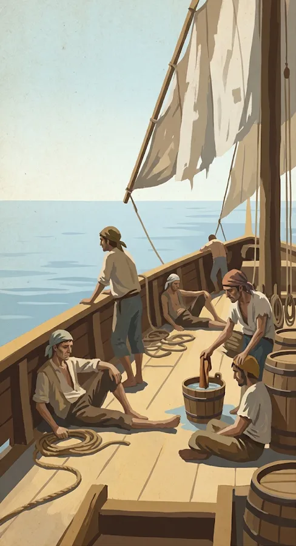
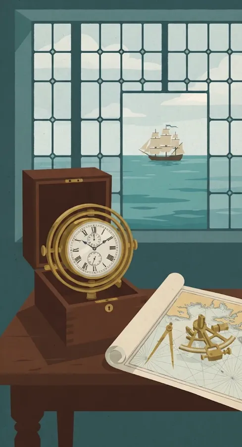
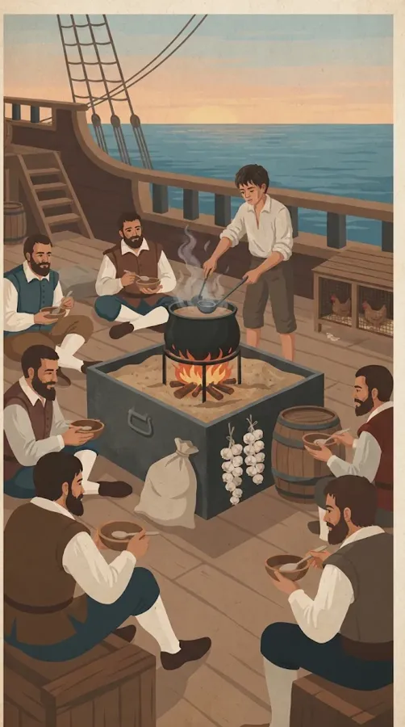
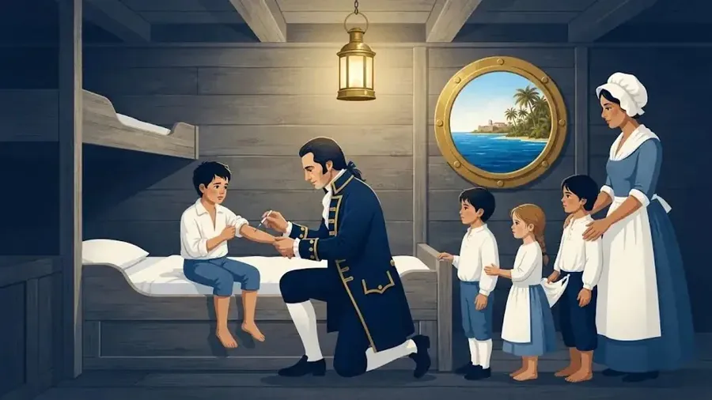
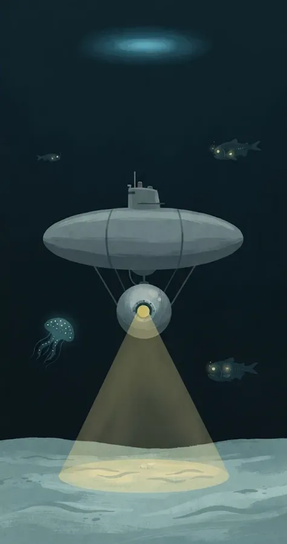

Hace quinientos años, el océano más grande del planeta era un hueco en los mapas. Los barcos sabían cruzarlo en un sentido, pero no volver; los pilotos sabían a qué altura del mundo estaban, pero no cuánto habían avanzado; y en cada travesía morían de hambre y de escorbuto decenas de hombres.
Este primer número de Bitácora del Almirante cuenta cómo se domó el Pacífico: la vuelta al mundo de Magallanes y Elcano, la ruta de vuelta que encontró un fraile guipuzcoano, el reloj que resolvió el problema de la longitud, los doscientos cincuenta años del galeón de Manila y la enfermera gallega que cruzó el océano cuidando a veintiséis niños. Además, un documento de la época, los mitos que conviene desmontar y dónde seguir leyendo.
La misma historia, contada para los más jóvenes, está en Bitácora del Grumete, la revista hermana con Ammo.
Magallanes, Elcano y la primera vuelta al mundo (1519-1522)
Salieron doscientos cuarenta hombres en cinco barcos. Volvieron dieciocho en uno solo, con las bodegas llenas de clavo y una noticia que nadie esperaba: el mundo era mucho más grande de lo que decían los mapas, y en medio había un océano que tardaron casi cien días en cruzar sin tocar tierra.
Una carrera por las especias
A principios del siglo XVI, un saco de clavo valía en Sevilla o en Amberes lo que una casa. El clavo, la nuez moscada y la canela llegaban a Europa desde unas pocas islas del otro lado del mundo, pasando por tantas manos (mercaderes malayos, indios, árabes, venecianos) que cada una le sumaba su ganancia. Quien llegara a las islas de las especias por su cuenta, sin intermediarios, se haría inmensamente rico.
Portugal llevaba ventaja. Desde que Vasco da Gama dobló el cabo de Buena Esperanza en 1498, sus barcos bajaban por África, cruzaban el Índico y en 1512 ya habían alcanzado las Molucas, el puñado de islas volcánicas donde crecía el clavo. España, en cambio, tenía cerrado ese camino: en el Tratado de Tordesillas (1494), los dos reinos se habían repartido el mundo con una línea de polo a polo trazada en el Atlántico. Lo que quedaba al este era para Portugal; lo que quedaba al oeste, para Castilla.
El estrecho que hoy lleva el nombre de Magallanes: más de un mes de canales y fiordos, con las hogueras de los indígenas en la orilla. De ahí el nombre de Tierra del Fuego.
El problema era que nadie sabía dónde caía esa línea al otro lado del planeta. La Tierra es una esfera, y una raya que la parte en dos por el Atlántico tiene que salir por algún sitio de Asia. ¿Y si las Molucas quedaban en la mitad castellana? Para comprobarlo había que llegar allí navegando hacia el oeste, sin pisar la ruta portuguesa. Y eso significaba encontrar un paso a través de América, un continente que se alzaba en medio como una muralla de norte a sur.
Un portugués al servicio del rey de España
Fernando de Magallanes conocía bien aquellos mares. Había servido ocho años en la India y en Malaca con los portugueses, había peleado en sus batallas y tenía amigos que habían llegado a las Molucas. Pero cayó en desgracia en la corte de Lisboa, el rey Manuel le negó un aumento de sueldo y Magallanes hizo lo que hacían entonces muchos marinos sin futuro en su tierra: ofrecer su proyecto a la competencia.
En 1518 se presentó en Valladolid ante el joven rey Carlos I, que acababa de llegar de Flandes. Llevaba un globo terráqueo y la convicción de que existía un estrecho al sur de América por el que se podía pasar al otro océano. Prometía llegar a las islas de las especias en pocos meses y demostrar que caían del lado español. El rey firmó las capitulaciones: le daba cinco barcos, la vigésima parte de los beneficios y el gobierno de las tierras que descubriera.

Noventa y ocho días sin tocar tierra: bizcocho podrido, cuero remojado, aserrín y ratas a medio ducado.
Cinco naos y doscientos cuarenta hombres
La flota zarpó de Sanlúcar de Barrameda el 20 de septiembre de 1519. Eran cinco naos viejas y reparadas a toda prisa: la Trinidad, capitana de Magallanes; la San Antonio, la mayor; la Concepción, la Victoria y la Santiago, la más pequeña. A bordo iban unos doscientos cuarenta hombres de una decena de países: castellanos, vascos, andaluces, portugueses, italianos, griegos, franceses, flamencos, un inglés, varios africanos y un esclavo malayo, Enrique, que Magallanes había comprado en Malaca y que sería el intérprete al llegar a Asia.
Entre ellos viajaba un joven noble italiano, Antonio Pigafetta, que se había embarcado «para ver las cosas maravillosas del océano». Llevaba un cuaderno y lo apuntó todo: lo que comían, lo que veían, las palabras de los pueblos que encontraban. Gracias a él sabemos casi todo lo que pasó.
Las canoas de los chamorros rodean a las naves en Guam, el 6 de marzo de 1521.
También iba como maestre de la Concepción un marino de Getaria, en Guipúzcoa, de unos treinta años, que había tenido problemas con la justicia por vender un barco a unos extranjeros. Se llamaba Juan Sebastián Elcano. Nadie le prestó demasiada atención al principio.
El invierno del motín
La flota bajó por la costa de Brasil y siguió hacia el sur, entrando en mares cada vez más fríos. Los capitanes castellanos desconfiaban de aquel portugués que no les explicaba la ruta y que daba órdenes sin consultar. En marzo de 1520, con el invierno austral encima, Magallanes decidió esperar la primavera en una bahía de la Patagonia que llamó San Julián.
La noche de Pascua, tres de los cinco barcos se amotinaron. Magallanes reaccionó con rapidez y sin piedad: mandó a unos hombres de confianza a la Victoria con un mensaje y un puñal, mató a su capitán, recuperó el control y cerró la boca de la bahía con sus barcos. Uno de los cabecillas fue ejecutado y descuartizado; otro, Juan de Cartagena, abandonado en la costa con un clérigo cuando la flota se marchó. Elcano, que había participado en el motín, fue perdonado porque hacían falta brazos.
Durante aquel invierno la Santiago naufragó explorando la costa. Allí vieron también por primera vez a los habitantes de la Patagonia, hombres altísimos para los europeos, vestidos con pieles de guanaco. Pigafetta escribió que la cabeza de un marinero apenas les llegaba a la cintura. Probablemente exageraba, pero el nombre se quedó: patagones.
El laberinto
El 21 de octubre de 1520 encontraron por fin una abertura en la costa, junto a un cabo que llamaron de las Vírgenes por ser el día de santa Úrsula y las once mil vírgenes. Durante más de un mes navegaron por un laberinto de canales, fiordos y callejones sin salida, entre montañas nevadas y con un tiempo endiablado. Por la noche veían en la orilla del sur las hogueras de los indígenas y llamaron a aquella tierra Tierra del Fuego.
En el estrecho perdieron otro barco, y no por un naufragio. La San Antonio, que llevaba buena parte de las provisiones, se separó del resto para explorar un canal y no volvió: sus oficiales encerraron al capitán y dieron media vuelta hacia España. Magallanes la esperó y la buscó durante días. No volvió a verla.
El 28 de noviembre de 1520, las tres naves que quedaban salieron a un mar abierto, enorme y tranquilo. Pigafetta cuenta que Magallanes lloró de alegría. Lo llamó Mar Pacífico porque en todo el tiempo que lo cruzaron no encontraron una sola tormenta.
Noventa y ocho días
Magallanes creía que las islas de las especias estaban a unos pocos días de navegación. Los mapas de la época, que se basaban en cálculos antiguos, hacían la Tierra un tercio más pequeña de lo que es. Nadie sospechaba que el Pacífico ocupa casi un tercio de la superficie del planeta: es más grande que todas las tierras emergidas juntas.
Navegaron hacia el noroeste durante semanas, luego durante meses, sin ver nada más que agua. Pasaron, por pura mala suerte, junto a cientos de islas habitadas de la Polinesia sin tocar ninguna. Solo vieron dos islotes desiertos, sin agua ni comida, a los que llamaron las Desventuradas.
Lo que vino después lo contó Pigafetta en una de las páginas más duras de la historia de la navegación:
«Comíamos bizcocho que ya no era pan, sino un polvo lleno de gusanos, porque ellos se habían comido lo bueno, y olía fuertemente a orines de rata. Bebíamos agua amarilla, podrida desde hacía muchos días. Comimos también los cueros de buey que cubrían la verga mayor para que no rozase las jarcias; estaban tan duros por el sol, la lluvia y el viento que había que dejarlos en remojo en el mar cuatro o cinco días, y luego los poníamos un poco sobre las brasas y así los comíamos. Y muchas veces aserrín de tablas. Las ratas se vendían a medio ducado cada una, y aun así no se podían conseguir.»
Peor que el hambre fue el escorbuto, la enfermedad de los marinos que pasaban meses sin comer fruta ni verdura fresca. Les sangraban y se les hinchaban las encías hasta tapar los dientes, de manera que no podían masticar, se les abrían heridas viejas y se morían de agotamiento. Diecinueve hombres murieron en la travesía y otros veinticinco o treinta enfermaron. Pigafetta, que comía de la reserva de membrillo de Magallanes, se libró. Nadie entendía entonces la relación.
Las islas de los Ladrones
El 6 de marzo de 1521, después de noventa y ocho días de mar, vieron tierra: la isla de Guam, en las Marianas. Los chamorros salieron a recibirlos en canoas rapidísimas y subieron a los barcos, cogiendo todo lo que veían de hierro; para ellos era lo natural, porque el intercambio era así, pero los europeos lo vieron como un robo. Cuando se llevaron el esquife de la Trinidad, Magallanes desembarcó con cuarenta hombres armados, quemó casas y mató a varios isleños. Llamó a aquellas tierras las islas de los Ladrones. Pero en Guam pudieron comer por fin coco, plátano y pescado, y los enfermos empezaron a mejorar.
Diez días después llegaron a las islas que más tarde se llamarían Filipinas. Allí Enrique, el esclavo de Malaca, habló con unos pescadores en malayo y le entendieron. Por primera vez en la historia, un hombre había dado la vuelta completa al mundo y volvía a oír su lengua. Es posible que fuera él, y no Magallanes ni Elcano, el primero en rodear el planeta.
Mactán
En Cebú, el rajá Humabon recibió a Magallanes como a un aliado poderoso, se bautizó con cientos de los suyos y le pidió ayuda contra sus rivales. Magallanes, confiado en sus armaduras y sus arcabuces, se ofreció a someter a uno de ellos: Lapulapu, jefe de la vecina isla de Mactán, que se negaba a pagar tributo.
El 27 de abril de 1521 desembarcó en Mactán con unos cincuenta hombres. La marea baja dejó los barcos lejos de la orilla, de modo que los cañones no servían de nada, y en la playa esperaban más de mil guerreros. Los europeos aguantaron más de una hora, retrocediendo con el agua por las rodillas, hasta que los isleños descubrieron que las armaduras no protegían las piernas. Magallanes cayó con una flecha envenenada, un tajo en la pierna y una lanza. Pigafetta, herido en la frente, lo vio morir mientras cubría la retirada de los suyos.
Lo que siguió fue un desastre. Humabon, que ya no veía tan poderosos a sus aliados, invitó a los oficiales a un banquete y los mandó matar. Murieron veintisiete hombres, entre ellos los dos capitanes elegidos tras Magallanes. Quedaban unos ciento quince supervivientes, demasiado pocos para tres barcos. Quemaron la Concepción y siguieron con la Trinidad y la Victoria.
El clavo
Durante meses vagaron por los mares del sudeste asiático, perdidos, haciendo de corsarios y buscando pilotos que los guiaran. El 8 de noviembre de 1521 llegaron por fin a Tidore, en las Molucas. El sultán los recibió bien, porque odiaba a los portugueses de la isla vecina, y les vendió todo el clavo que quisieron a cambio de telas, espejos, cuchillos y hachas.
Pero la Trinidad hacía agua y no podía partir. Decidieron separarse: la Trinidad intentaría volver cruzando otra vez el Pacífico hacia Panamá, y la Victoria seguiría hacia el oeste, por la ruta portuguesa, con Elcano como capitán. La Trinidad no lo consiguió: los vientos la devolvieron una y otra vez hacia el oeste, la mitad de los hombres murieron de escorbuto y los portugueses capturaron a los supervivientes. Nadie sabía aún cómo volver por el Pacífico. Hicieron falta cuarenta años para averiguarlo.
Volver sin tocar tierra
La Victoria salió de Tidore el 21 de diciembre de 1521 con unos sesenta hombres y la bodega llena de clavo. Elcano tomó una decisión arriesgadísima: cruzar el océano Índico muy al sur, lejos de las costas y los puertos portugueses, para que no lo apresaran. Era casi un segundo Pacífico.
Doblaron el cabo de Buena Esperanza en mayo de 1522, con un mástil roto y el casco lleno de vías de agua, y subieron por la costa africana comiendo solo arroz. Murieron más de veinte hombres. En julio, desesperados, pararon en las islas de Cabo Verde, que eran portuguesas, haciéndose pasar por un barco que volvía de América. Allí descubrieron algo asombroso: según el diario de a bordo era miércoles, pero en tierra era jueves. Al dar la vuelta al mundo hacia el oeste habían perdido un día. Era la primera vez que alguien lo comprobaba.
Los portugueses descubrieron el engaño y apresaron a trece marineros que habían bajado a por arroz. Elcano zarpó a toda prisa con los que quedaban.
El 6 de septiembre de 1522, la Victoria entró en Sanlúcar de Barrameda. Dos días después, remolcada río arriba, fondeó en Sevilla. Bajaron dieciocho hombres, flacos como palos. Al día siguiente fueron descalzos y con una vela en la mano a dar gracias a la iglesia de la Victoria y a Santa María de la Antigua, como habían prometido en las tormentas.
Lo que trajeron
En la bodega de la Victoria había más de quinientos quintales de clavo, unas veinticuatro toneladas. Su venta bastó para pagar toda la expedición, con los cuatro barcos perdidos incluidos, y aún dio beneficios. Carlos I recibió a Elcano en Valladolid y le dio un escudo de armas con un globo terráqueo y un lema en latín: Primus circumdedisti me, «Fuiste el primero que me diste la vuelta».
Pero la expedición trajo algo más valioso que el clavo. Demostró, de manera práctica e indiscutible, que la Tierra se podía rodear navegando, que todos los océanos estaban comunicados y que el planeta era mucho mayor de lo que creían los sabios. El Pacífico dejó de ser un hueco en los mapas.
La cuestión de las Molucas, en cambio, no se resolvió. España y Portugal discutieron durante años dónde caía la línea de Tordesillas al otro lado del mundo, porque nadie sabía medir bien la longitud (de eso trata el artículo de ciencia de este número). En 1529, en el Tratado de Zaragoza, Carlos I renunció a las Molucas a cambio de 350.000 ducados: necesitaba dinero para sus guerras y para su boda con Isabel de Portugal. Las islas de las especias quedaron para los portugueses.
Elcano no se hizo rico. Volvió al Pacífico en 1525 con otra expedición, la de García Jofre de Loaísa, y murió de escorbuto en medio del océano el 4 de agosto de 1526. Lo echaron al mar, como a tantos compañeros. De los doscientos cuarenta hombres que salieron en 1519, regresaron por la Victoria dieciocho, a los que se sumaron después los trece de Cabo Verde y unos pocos supervivientes de la Trinidad. Fue una hazaña, y también una de las travesías más mortíferas de la historia.
Fuentes principales: Antonio Pigafetta, «Relación del primer viaje alrededor del mundo» (1525); carta de Juan Sebastián Elcano al emperador (6 de septiembre de 1522); Martín Fernández de Navarrete, «Colección de los viajes y descubrimientos» (1837).
Durante cuarenta años, el Pacífico fue un océano de ida. Los barcos españoles sabían llegar a Asia desde América, pero ninguno conseguía regresar. Lo logró un fraile guipuzcoano que había pasado su juventud en las Molucas, siguiendo una idea tan sencilla como atrevida: para volver, había que subir mucho hacia el norte.
Un mar con una sola dirección
Cuando la Trinidad, la nave capitana de Magallanes, intentó volver desde las Molucas hacia Panamá en 1522, se encontró con un muro invisible. En la franja tropical del Pacífico, los vientos alisios soplan constantemente del este. Eran perfectos para ir de América a Asia, como había comprobado la flota de Magallanes, pero para volver había que navegar contra ellos semana tras semana. La Trinidad lo intentó durante cinco meses, subió hasta latitudes frías, perdió a la mitad de su tripulación por el escorbuto y acabó dando la vuelta. Los portugueses capturaron a los supervivientes en las Molucas.
No fue el único fracaso. En 1527 Hernán Cortés, desde México, envió tres barcos al mando de su primo Álvaro de Saavedra para socorrer a los españoles que quedaban en las Molucas. Saavedra llegó sin problemas, pero intentó volver dos veces, en 1528 y 1529, y las dos veces los vientos lo derrotaron. Murió en el segundo intento. En 1543, la expedición de Ruy López de Villalobos, la que bautizó las islas Filipinas en honor del príncipe Felipe, intentó el regreso dos veces más, con el mismo resultado. Y en 1545 Íñigo Ortiz de Retes, buscando el camino de vuelta por el sur, acabó descubriendo la costa de Nueva Guinea.
España podía llegar a Asia por el Pacífico, pero aquello no servía de nada. Una ruta por la que no se puede volver no permite comerciar, ni mandar noticias, ni enviar refuerzos, ni cobrar impuestos. Los que llegaban a Asia quedaban atrapados allí, a merced de los portugueses.
Ida por el sur, con los alisios; vuelta por el norte, con los vientos del oeste y la corriente de Kuroshio: la ruta de Urdaneta.
El paje de Elcano
Andrés de Urdaneta nació hacia 1508 en Villafranca de Ordizia, en Guipúzcoa. A los diecisiete años se embarcó en La Coruña como paje en la expedición de García Jofre de Loaísa, la segunda que intentó llegar a las Molucas por el estrecho de Magallanes. Su jefe directo era el piloto mayor de la flota, un paisano suyo: Juan Sebastián Elcano.
Aquella expedición fue un desastre. De los siete barcos que salieron en 1525 solo uno llegó a su destino, y por el camino murieron de escorbuto tanto Loaísa como Elcano. Urdaneta llegó a las Molucas en 1526 con los supervivientes y se quedó allí más de ocho años, peleando contra los portugueses, aprendiendo la lengua malaya, haciendo de embajador ante los sultanes y tomando nota de todo: los vientos de cada estación, las corrientes, las estrellas, las rutas de los pilotos locales.
En 1535 volvió a Europa por la ruta portuguesa, rodeando África, y llegó a Lisboa en 1536. Los portugueses le confiscaron sus mapas y sus diarios, pero no pudieron quitarle lo que llevaba en la cabeza. Escapó a España y escribió un informe detallado para el emperador. Con veintiocho años, había dado la vuelta al mundo y era probablemente el europeo que mejor conocía el Pacífico occidental.
Un galeón cruza el Pacífico Norte camino de Acapulco.
De marino a fraile
Urdaneta pasó después a Nueva España, donde trabajó al servicio del virrey Antonio de Mendoza. En 1552, con más de cuarenta años, hizo algo inesperado: entró en la orden de San Agustín. Parecía que su vida de marino había terminado.
Pero en 1559 el rey Felipe II decidió que había que establecerse en las Filipinas y encontrar por fin el camino de vuelta. Escribió personalmente al fraile pidiéndole que acompañara la expedición, por lo mucho que sabía de aquellos mares y de su navegación. Urdaneta aceptó con dos condiciones: ir como religioso, no como capitán, y que el mando lo tuviera un hombre de su confianza, Miguel López de Legazpi, un escribano guipuzcoano como él, sin ninguna experiencia en el mar pero con fama de prudente y justo.
Ir para volver
La flota de Legazpi salió del puerto de Barra de Navidad, en la costa del Pacífico mexicano, el 21 de noviembre de 1564: cuatro barcos y unas trescientas cincuenta personas. Tres meses después llegaron a las Filipinas, y en abril de 1565 Legazpi se instaló en la isla de Cebú, donde cuarenta y cuatro años antes había muerto Magallanes.
Las instrucciones del rey eran claras: había que buscar el camino de vuelta lo antes posible. Urdaneta tenía su teoría. Igual que en el Atlántico, donde los barcos iban a América por el sur, con los alisios, y volvían por el norte, con los vientos del oeste, en el Pacífico debía existir una franja de vientos contrarios más al norte. Los fracasos anteriores habían intentado volver demasiado cerca del ecuador. Había que subir mucho más, hasta la latitud de Japón, y dejarse llevar.
El 1 de junio de 1565 salió de Cebú la nao San Pedro, la más grande de la flota, de unas quinientas toneladas. Iba al mando un joven de unos dieciocho años, Felipe de Salcedo, nieto de Legazpi, pero quien decidía la ruta era Urdaneta. Llevaban unas doscientas personas.
Cuatro meses de agua
El San Pedro no fue hacia el este, sino hacia el nordeste. Pasó entre las islas Filipinas, salió a mar abierto y siguió subiendo durante semanas, cada vez más al norte, hasta pasar los 38 grados de latitud, a la altura de Tokio. Allí encontraron lo que buscaban: vientos constantes del oeste y una gran corriente marina, la que hoy llamamos de Kuroshio, que corre como un río hacia el este por el norte del Pacífico.
Empujados por viento y corriente, cruzaron el océano en una larguísima diagonal. Fue un viaje terrible. Tardaron más de cuatro meses sin tocar tierra y el escorbuto se cebó con la tripulación. Murieron varios hombres, y al final del viaje, según los relatos, solo dieciocho hombres seguían en condiciones de manejar el barco.
En septiembre vieron la costa de California y bajaron siguiendo la costa hacia el sur. El 8 de octubre de 1565, ciento treinta días después de salir de Cebú, el San Pedro entró en Acapulco.
La sorpresa de Arellano
En México les esperaba una sorpresa. Dos meses antes había llegado al puerto de Barra de Navidad otro barco de la expedición: el San Lucas, el más pequeño, al mando de Alonso de Arellano, con un piloto llamado Lope Martín. El San Lucas se había separado de la flota durante el viaje de ida, nadie sabía si por accidente o a propósito, había visitado algunas islas por su cuenta y había vuelto también por el norte, aunque por una ruta menos clara.
Arellano fue, técnicamente, el primero en hacer el tornaviaje. Pero su relato era confuso, se sospechaba que había desertado, y no traía cartas de navegación ni observaciones fiables. Urdaneta, en cambio, había anotado cada latitud, cada cambio de viento y cada corriente, y viajó enseguida a España para explicar su ruta en la corte de Felipe II. Su derrota se convirtió en la ruta oficial, y la historia le reconoce como el descubridor del tornaviaje.
Doscientos cincuenta años
La ruta de Urdaneta cambió el mundo. Desde 1565 hasta 1815, durante doscientos cincuenta años, los galeones de Manila hicieron cada año el viaje de ida y vuelta entre Filipinas y México: a Asia por el sur, con los alisios, en unos tres meses; de vuelta por el norte, con los vientos del oeste, en cinco o seis. Fue la ruta comercial regular más larga del mundo y la primera que unió de forma estable América, Asia y, a través de México y Veracruz, Europa. Por ella viajaron la plata americana hacia China y la seda, la porcelana y las especias hacia México y España. (De la vida a bordo de aquellos galeones trata el artículo de sociedad de este número.)
Manila, fundada por Legazpi en 1571, se convirtió en el puerto donde se encontraban comerciantes chinos, japoneses, malayos, españoles y mexicanos. Muchos historiadores consideran que aquel intercambio fue el nacimiento de la primera economía verdaderamente global.
Urdaneta no volvió a navegar. Regresó a México y murió en el convento de San Agustín de la capital el 3 de junio de 1568. En Ordizia, su pueblo natal, una estatua lo recuerda con el hábito de fraile y un mapa en la mano. Y durante dos siglos y medio, los pilotos de los galeones siguieron subiendo hacia el norte antes de cruzar el océano, como él les había enseñado.
Fuentes principales: relación del viaje del San Pedro (1565) y cartas de Urdaneta y Legazpi en el Archivo General de Indias; Mariano Cuevas, «Monje y marino: la vida y los tiempos de fray Andrés de Urdaneta» (1943).
El problema de la longitud y el reloj que lo resolvió
Durante tres siglos, los marinos supieron a qué altura del mundo estaban, pero no cuánto habían avanzado hacia el este o el oeste. Ese error hundió flotas, escondió islas y alimentó disputas entre reinos. Lo resolvió, contra la opinión de los grandes astrónomos de su época, un carpintero inglés que construía relojes.
Dos coordenadas, un solo problema
Para saber dónde está un barco hacen falta dos datos. La latitud dice lo lejos que estamos del ecuador, hacia el norte o hacia el sur. La longitud dice lo lejos que estamos hacia el este o hacia el oeste de un punto de referencia.
Un piloto mide la altura del Sol con el astrolabio: así se calculaba la latitud. La longitud era otra cosa.
La latitud se conocía bien desde la Antigüedad. Basta con medir a qué altura sobre el horizonte está la estrella Polar por la noche, o el Sol a mediodía, y consultar una tabla. Los pilotos del siglo XVI lo hacían con el astrolabio, el cuadrante o la ballestilla, y cometían errores de pocas decenas de kilómetros. Por eso las rutas de la época siguen tantas veces un paralelo: el piloto subía o bajaba hasta la latitud de su destino y luego navegaba recto hacia el este o el oeste, esperando ver tierra.
La longitud era otra cosa. El cielo no cambia al moverse hacia el este o el oeste, porque la Tierra gira y todas las estrellas pasan por encima de todos los lugares. La única pista es el tiempo.
Una cuestión de horas
La Tierra da una vuelta completa, 360 grados, en 24 horas. Eso significa que cada hora gira 15 grados. Si en el lugar donde estoy es mediodía, con el Sol en lo más alto, y en Cádiz en ese mismo momento son las tres de la tarde, estoy tres horas al oeste de Cádiz, es decir, a 45 grados de longitud.
Calcular la hora local es fácil: basta con observar cuándo el Sol alcanza su punto más alto. Lo difícil es saber qué hora es en ese mismo instante en el puerto de partida. Para eso hace falta un reloj que lleve la hora del puerto y no se equivoque durante meses de travesía. Y aquí estaba el problema: los relojes de péndulo del siglo XVII funcionaban bien en tierra, pero en un barco que cabecea, con cambios de temperatura y humedad, adelantaban o atrasaban minutos cada día. Y cada minuto de error, en el ecuador, son casi treinta kilómetros.
Una raya que nadie podía trazar
El primer gran conflicto por la longitud lo vivió España. En el Tratado de Tordesillas (1494), Castilla y Portugal se repartieron el mundo con una línea de polo a polo. Cuando la expedición de Magallanes y Elcano llegó a las Molucas, la gran pregunta era en qué lado de esa línea caían las islas del clavo. En 1524 se reunió en la frontera, entre Badajoz y Elvas, una junta de cosmógrafos y pilotos de los dos reinos, entre ellos Elcano. Discutieron durante semanas y no se pusieron de acuerdo, porque nadie podía medir la longitud de las Molucas con seguridad. Hoy sabemos que caían en la mitad portuguesa, pero entonces cada uno presentaba los mapas que le convenían.
El problema era tan grave que los reyes de España ofrecieron premios a quien lo resolviera. En 1598 Felipe III prometió una renta perpetua de 6.000 ducados, una fortuna, al inventor de un método práctico. Se presentaron decenas de propuestas, muchas disparatadas. Una de las serias vino de Galileo Galilei, que había descubierto las lunas de Júpiter y propuso usar sus eclipses como un reloj celeste que se ve igual desde cualquier lugar de la Tierra. La idea era buena en tierra firme, y con ella se corrigieron muchos mapas, pero en un barco que se balancea era imposible observar con el telescopio aquellos puntitos de luz.

El cronómetro marino, un reloj capaz de llevar durante meses la hora del puerto de salida.
La noche de las Sorlingas
El 22 de octubre de 1707, una flota británica que volvía del Mediterráneo navegaba hacia Inglaterra con niebla y mal tiempo. Sus pilotos creían estar al oeste de la península de Bretaña, a salvo en mar abierto. En realidad estaban mucho más al norte y al este, junto a las islas Sorlingas, en la punta de Cornualles. En pocas horas, cuatro barcos de guerra se estrellaron contra las rocas. Murieron más de mil cuatrocientos marineros, entre ellos el almirante Cloudesley Shovell.
La tragedia conmocionó al país, que vivía del mar. En 1714 el Parlamento británico aprobó la Ley de la Longitud y ofreció un premio de 20.000 libras, varios millones de euros de hoy, a quien encontrara un método para determinar la longitud en el mar con un error menor de medio grado. Para juzgar las propuestas creó un tribunal, la Junta de la Longitud, formada sobre todo por astrónomos.
Dos caminos
Los astrónomos estaban convencidos de que la solución estaba en el cielo. La Luna se mueve deprisa respecto a las estrellas, y su posición en cada momento podría servir de reloj universal: si se calculaba con antelación, en unas tablas, dónde estaría la Luna a cada hora vista desde Greenwich, un marino que midiera desde el barco la distancia entre la Luna y una estrella podría deducir qué hora era en Greenwich. Era el método de las distancias lunares. Funcionaba, pero exigía observaciones muy precisas y cuatro horas de cálculos complicados cada vez.
El otro camino era más sencillo de explicar y parecía imposible de lograr: construir un reloj que no fallara en el mar.
El carpintero
John Harrison nació en 1693 en Yorkshire, hijo de un carpintero, y aprendió el oficio de su padre. Nunca fue a la universidad, pero de joven construyó por su cuenta varios relojes de pared casi enteramente de madera, con piezas que no necesitaban aceite, porque el aceite de la época se espesaba y estropeaba los mecanismos. Eran asombrosamente precisos.
En 1730 viajó a Londres a presentar su idea de un reloj marino. Tardó cinco años en construir el primero, el H1: una máquina de bronce de más de treinta kilos, llena de muelles y balancines que se compensaban unos a otros para que el movimiento del barco no lo alterase. En una prueba en el mar, en 1736, funcionó bien. Pero Harrison, perfeccionista, no quedó satisfecho y pidió dinero para hacer uno mejor.
Dedicó el resto de su vida al problema. El H2 y el H3 le llevaron más de veinte años. Y entonces cambió de idea por completo: en lugar de una gran máquina, en 1759 terminó un reloj de bolsillo algo grande, de unos trece centímetros, con un mecanismo que oscilaba muy deprisa y era casi inmune a los golpes. Lo llamó H4.
Cinco segundos
En noviembre de 1761, el H4 embarcó rumbo a Jamaica en un barco de guerra, al cuidado del hijo de Harrison, William. Al llegar, después de 81 días de travesía, el reloj se había retrasado solo cinco segundos. Eso equivalía a un error de pocos kilómetros, muy por debajo de lo que exigía el premio. Una segunda prueba, en 1764, a la isla de Barbados, confirmó el resultado.
Pero la Junta de la Longitud, dominada por los astrónomos y en especial por Nevil Maskelyne, defensor de las distancias lunares, puso una pega tras otra: que había sido suerte, que había que comprobar si se podían fabricar más relojes iguales, que Harrison debía entregar sus planos y sus máquinas. Harrison, ya anciano, tuvo que recurrir al propio rey Jorge III, que probó en su observatorio privado el último reloj de Harrison, el H5, comprobó su precisión y tomó partido por él. En 1773, el Parlamento le concedió por fin 8.750 libras, que, sumadas a las ayudas anteriores, le acercaron al premio. Murió tres años después, en 1776.
El amigo fiel
La prueba definitiva la dio el capitán James Cook. En su segundo viaje al Pacífico, entre 1772 y 1775, llevó una copia del H4 hecha por el relojero Larcum Kendall. Durante tres años de navegación por los mares del Sur, aquel reloj le permitió trazar mapas de una precisión nunca vista. Cook lo llamaba en su diario «nuestro fiel amigo, el reloj».
A lo largo del siglo siguiente, los cronómetros marinos se hicieron más baratos y todas las marinas del mundo los adoptaron. España fundó en 1753, a iniciativa del marino y científico Jorge Juan, el Observatorio de la Armada en Cádiz, y sus barcos midieron la longitud a partir del meridiano de esa ciudad. Los marinos de la expedición de Malaspina, que recorrió el Pacífico entre 1789 y 1794, llevaban cronómetros marinos y los usaron para corregir las cartas de medio océano.
Quedaba una última cuestión: desde dónde contar. Cada país usaba su propio meridiano cero: París, Cádiz, Lisboa, Greenwich… En 1884, una conferencia internacional celebrada en Washington eligió el meridiano del observatorio de Greenwich como referencia común para todo el mundo. Desde entonces, cuando decimos que un lugar está a 3 grados oeste, lo medimos desde un patio de las afueras de Londres.
Hoy, un teléfono móvil calcula la longitud gracias a los satélites GPS, que funcionan con el mismo principio que el reloj de Harrison: llevan a bordo relojes atómicos y miden diferencias de tiempo, en este caso de millonésimas de segundo. Los cuatro relojes de Harrison, H1, H2, H3 y H4, se conservan en el Observatorio Real de Greenwich. Y siguen funcionando.
Para saber más: Dava Sobel, «Longitud» (1995); Observatorio Real de Greenwich (Londres), sala de los relojes de Harrison.
Durante doscientos cincuenta años, cada verano salía de Manila un barco enorme cargado hasta los topes de seda, porcelana y especias, rumbo a un puerto mexicano al otro lado del océano. Era el viaje regular más largo del mundo: cinco o seis meses sin pisar tierra, con cientos de personas apretadas entre fardos. Así se vivía, y así se moría, a bordo.
La nao de China
En México lo llamaban la nao de China; en Manila, el galeón de Acapulco. Era la misma ruta vista desde cada orilla. Desde que Urdaneta descubrió en 1565 el camino de vuelta por el norte del Pacífico, un galeón, a veces dos, cruzaba cada año el océano en cada sentido. El último salió de Acapulco en 1815, cuando la guerra de independencia de México cortó la línea.
El negocio era sencillo y enorme. China, el país más poblado y productivo del mundo, fabricaba lo que Europa y América deseaban: seda en rama y en tejidos, porcelana, lacas, abanicos, biombos. Y quería a cambio una sola cosa: plata. En el siglo XVI el Imperio chino había pasado a cobrar sus impuestos en plata, y la necesitaba en cantidades inmensas. América tenía las minas de plata más ricas del planeta, las de Potosí y Zacatecas. El galeón unía las dos cosas. Iba a Manila cargado de monedas de plata acuñadas en México, los famosos reales de a ocho, y volvía cargado de mercancías chinas.
Manila era el punto de encuentro. Cada primavera llegaban decenas de juncos desde los puertos del sur de China con la mercancía. Los comerciantes chinos, a los que los españoles llamaban sangleyes, vivían en un barrio propio a las afueras de la ciudad, el Parián, y llegaron a ser muchos más que los españoles. Junto a ellos había japoneses, malayos, indios, armenios y portugueses de Macao. Por Manila pasaba el mundo entero.
Corte de un galeón: camarotes a popa, cañones, hamacas y una bodega repleta hasta el último rincón.
Un espacio que valía oro
Para proteger a los comerciantes de Sevilla, que temían la competencia de las sedas chinas, la Corona limitó el valor de lo que podía viajar en el galeón: el famoso permiso. El espacio de la bodega se repartía en piezas, fardos de medida fija, y cada vecino de Manila con derecho a comerciar recibía una papeleta, la boleta, que le daba derecho a cargar un número de piezas. Las boletas se compraban y se vendían, y valían una fortuna.
En la práctica, el límite se burlaba siempre. Los oficiales del barco, los frailes, los soldados y hasta los grumetes llevaban mercancía escondida en sus baúles, en sus camarotes y en cualquier rincón. Los galeones salían tan cargados que a veces se apilaban fardos en la cubierta, entre los cañones, lo que hacía imposible defenderse si aparecía un enemigo. El capitán de un galeón podía hacerse rico en un solo viaje, y el cargo se disputaba con favores y sobornos.

El fogón, el único lugar del barco donde estaba permitido encender fuego.
Barcos de madera filipina
Los galeones de Manila estaban entre los barcos más grandes de su tiempo. Los primeros tenían unas trescientas toneladas, pero con el tiempo se construyeron gigantes de más de mil, capaces de llevar a varios cientos de personas y miles de fardos. Se fabricaban sobre todo en los astilleros de Cavite, en la bahía de Manila, con maderas duras de las islas, como el molave, tan resistentes que las balas de cañón enemigas rebotaban en el casco. Los carpinteros eran filipinos y chinos, y el trabajo forzado para cortar y arrastrar los troncos era una de las cargas más odiadas por las comunidades de las islas.
La mayor parte de la tripulación también era filipina. Los documentos hablan de marineros «indios», la palabra que usaban entonces para los nativos de Filipinas, que eran expertos navegantes. Los oficiales eran españoles o criollos americanos. A bordo iban además soldados, funcionarios, frailes que viajaban hacia las misiones de Asia o volvían de ellas, comerciantes, criados y esclavos traídos de distintas partes de Asia, a los que en México llamaban genéricamente chinos.
El viaje de vuelta
El viaje de ida, de Acapulco a Manila, era relativamente tranquilo: unos tres meses con los vientos alisios a favor, por mares cálidos y con escala en Guam para tomar agua y comida fresca. El de vuelta era el temido.
El galeón salía de Manila a finales de junio o en julio, aprovechando el monzón. Solo atravesar el laberinto de islas filipinas hasta mar abierto podía llevar un mes. Después había que subir hacia el norte, por mares de tifones, hasta encontrar los vientos del oeste, y cruzar el océano sin una sola escala. Si todo iba bien, avistaban la costa de California en noviembre y llegaban a Acapulco en diciembre o enero. Si los vientos fallaban, el viaje podía durar siete u ocho meses.
Un viajero italiano, Giovanni Francesco Gemelli Careri, que hizo la travesía en 1697 por pura curiosidad, dejó escrito que aquel era el viaje más largo y más terrible del mundo. Describió el hambre, la sed, los mareos, los gusanos en la comida, el frío del norte, las tormentas que duraban días, las chinches y piojos que lo infestaban todo, y la muerte, que llegaba siempre.
Comer y beber durante medio año
La comida se embarcaba en Manila para seis meses: bizcocho, cecina y tasajo de vaca, pescado seco, arroz, garbanzos, frijoles, azúcar y vino. Los oficiales llevaban gallinas y cerdos vivos, que se iban sacrificando, y alguna conserva. Los marineros comían raciones mucho más pobres, y al cabo de unas semanas todo empezaba a pudrirse.
El agua era el gran problema. Se llevaba en tinajas de barro y en cañas de bambú, pero no bastaba para seis meses. Los galeones recogían el agua de lluvia con esteras y lonas tendidas sobre la cubierta, y había años en que la sed mataba tanto como el escorbuto.
Y el escorbuto era el enemigo de siempre. Después de dos o tres meses sin fruta fresca, la gente empezaba a caer: encías hinchadas, dientes que se aflojaban, heridas que no cerraban, un cansancio mortal. Algunos años llegaron a Acapulco galeones con decenas de muertos, y hubo travesías en las que pereció buena parte de la tripulación. Los cadáveres se envolvían en una manta o en una vela con una bala de cañón a los pies y se echaban al mar después de una oración.
Vivir en un fardo
El espacio era mínimo. Los pasajeros importantes tenían un camarote diminuto, a veces compartido. Los demás dormían donde podían: en la cubierta, entre los cañones o en las bodegas, encima de la mercancía. No había cuartos de baño; se usaban unas tablas colgadas sobre el agua en la proa. La gente no se lavaba durante meses.
Para matar el tiempo se rezaba mucho: misa los domingos y fiestas, rosario cada tarde, procesiones por la cubierta cuando amenazaba una tormenta. También se jugaba a los naipes y a los dados, aunque estaba prohibido, se cantaba, se pescaba y se celebraban las fiestas del calendario. Y sobre todo se esperaba la señal de la llegada: unas algas flotando en el mar, que los marinos llamaban señas, anunciaban que la costa de California estaba cerca. El que las veía primero recibía una recompensa, y a bordo se cantaba el Te Deum.
Naufragios y piratas
No todos llegaban. A lo largo de dos siglos y medio se perdieron decenas de galeones, por tifones, por errores de navegación o por exceso de carga. El San Felipe encalló en Japón en 1596 y su naufragio desencadenó una persecución contra los cristianos del país. La Nuestra Señora de la Concepción se hundió en 1638 junto a la isla de Saipán con un cargamento fabuloso.
Otros cayeron en manos enemigas. Para ingleses y holandeses, el galeón de Manila era el botín más codiciado de los mares. El inglés Thomas Cavendish capturó el Santa Ana frente a California en 1587, y en 1743 el comodoro George Anson apresó el Nuestra Señora de Covadonga cerca de Filipinas, con más de un millón de pesos de plata a bordo. Fueron excepciones: de los cientos de viajes que se hicieron, solo cuatro galeones fueron capturados.
La feria de Acapulco
Cuando por fin llegaba a Acapulco, el puerto, casi vacío el resto del año, se llenaba de gente. Comerciantes de la Ciudad de México, de Puebla y hasta de Perú acudían a la feria, donde durante semanas se vendían las sedas y las porcelanas al mejor postor. Desde allí, las mercancías subían a lomo de mula hasta la capital, y una parte seguía hasta Veracruz para embarcarse rumbo a España.
Por el galeón llegaron a América muchas cosas que hoy parecen propias de México: el mango de Manila, la palma de coco para hacer tuba, el mantón que después se llamaría de Manila y que acabó siendo parte del traje de las sevillanas. Y por él viajaron a Asia el maíz, el cacao, el tabaco, el chile y el cacahuete, que cambiaron para siempre la comida de China y Filipinas.
Cuando el último galeón dejó de navegar en 1815, aquella ruta había funcionado durante dos siglos y medio. Fue el primer puente comercial estable entre América y Asia, y uno de los hilos con que se tejió, sin que nadie lo supiera entonces, el mundo globalizado en que vivimos.
Fuentes principales: William L. Schurz, «El galeón de Manila» (1939); Giovanni Francesco Gemelli Careri, «Giro del mondo» (1699-1700); Archivo General de Indias, sección Filipinas.
La enfermera de la Real Expedición Filantrópica de la Vacuna (1803-1806)
En 1803, la vacuna contra la viruela solo sobrevivía unos días fuera de un cuerpo humano. Para llevarla a América y a Asia, España ideó un plan tan audaz como inquietante: embarcar a veintidós niños huérfanos y contagiarlos uno tras otro durante el viaje. A su cargo iba una mujer de origen humilde de la que apenas sabemos nada, salvo lo que hizo.
La enfermedad más temida
A finales del siglo XVIII, la viruela era la enfermedad más mortífera del mundo. Solo en Europa mataba a cientos de miles de personas cada año, y a quienes sobrevivían les dejaba la cara llena de cicatrices y, a muchos, ciegos. Ni los reyes se libraban: la propia familia de Carlos IV la había sufrido. En América, desde la llegada de los europeos, las epidemias habían arrasado pueblos enteros.
En 1796, un médico rural inglés, Edward Jenner, comprobó algo que las lecheras de su comarca sabían desde siempre: quienes se contagiaban de la viruela de las vacas, una enfermedad leve que se cogía al ordeñar, no se contagiaban después de la viruela humana. Jenner tomó pus de la mano de una lechera y se lo inoculó a un niño de ocho años. Semanas más tarde, lo expuso a la viruela y el niño no enfermó. Había nacido la vacuna, una palabra que viene precisamente de vaca.
El descubrimiento se extendió por Europa en pocos años. Pero tenía un problema enorme: el líquido de la vacuna perdía su efecto en pocos días, y un viaje en barco a América duraba más de un mes.
Isabel Zendal y los niños de la expedición, en una recreación: no se conserva ningún retrato suyo.
Niños como frascos vivos
El médico alicantino Francisco Javier Balmis, cirujano de cámara del rey, propuso una solución. La vacuna producía en el brazo del vacunado unas pústulas que, entre el noveno y el décimo día, contenían el líquido fresco con el que se podía vacunar a otra persona. Si se embarcaba a un grupo de niños que nunca hubieran pasado la viruela y se los vacunaba de dos en dos, cada diez días, de brazo a brazo, la vacuna llegaría viva al otro lado del océano.
Carlos IV aprobó el proyecto y lo pagó la Corona. Se llamó Real Expedición Filantrópica de la Vacuna y tenía un objetivo sin precedentes: llevar la vacuna, gratis, a todos los territorios del imperio español, de América a Filipinas, y enseñar a los médicos de cada lugar a conservarla y extenderla.
Hacían falta niños que no hubieran tenido la viruela, y los únicos que nadie reclamaría eran los huérfanos. Se reunieron veintidós niños de entre tres y nueve años, procedentes de las casas de expósitos de Madrid, Santiago y A Coruña. Y alguien tenía que cuidarlos.

La vacuna viajaba en el brazo de los niños, de dos en dos, cada diez días.
La rectora
Isabel Zendal, a la que los documentos de la época llaman también Cendala, Zendala o Gómez, nació hacia 1771 en el municipio de Ordes, cerca de A Coruña, en una familia campesina pobre. Fue madre soltera, algo que en su tiempo se pagaba caro, y trabajó durante años en la Casa de Expósitos de A Coruña, donde acabó siendo rectora, la mujer encargada de cuidar a los niños abandonados.
Balmis la eligió para el viaje. Iba como enfermera y cuidadora de los niños, con un sueldo propio, algo poco habitual para una mujer en la época. Llevó consigo a su hijo Benito, de nueve años, que viajó como uno más de los niños vacuníferos.
A Coruña, 30 de noviembre de 1803
La corbeta María Pita zarpó de A Coruña el 30 de noviembre de 1803. A bordo iban Balmis, su ayudante Josep Salvany, otros médicos, enfermeros, Isabel y los veintidós niños. En la bodega llevaban material médico y cientos de ejemplares de un tratado sobre la vacuna para repartir en América.
Los cuidados de Isabel eran vitales. Los niños vacunados tenían fiebre y molestias; había que impedir que se rascaran las pústulas, que se tocaran unos a otros y se contagiaran antes de tiempo, porque entonces la cadena se rompería. Había que mantenerlos limpios, alimentados y tranquilos en un barco que cabeceaba durante semanas. Y había que consolarlos: eran niños pequeños, solos, en medio del océano.
La primera escala fue Tenerife, en diciembre, donde se vacunó a la población. El 9 de febrero de 1804 llegaron a Puerto Rico, y en marzo a Venezuela, donde en pocas semanas se vacunó a unas doce mil personas. En el puerto de La Guaira la expedición se dividió en dos: Salvany partió hacia el sur, hacia Colombia, Ecuador, Perú y Bolivia, un viaje que duraría siete años y en el que perdería la vida. Balmis, Isabel y los niños siguieron hacia Cuba y México.
México
En agosto de 1804 llegaron a la Ciudad de México. Allí Balmis organizó juntas de vacunación, enseñó a los médicos y recorrió el país vacunando. Los niños gallegos no siguieron el viaje: Balmis consiguió que se quedaran en México, a cargo de la Corona, que debía pagar su educación hasta que pudieran valerse por sí mismos.
Pero el plan seguía. Había que llevar la vacuna a Filipinas, cruzando el Pacífico en el galeón de Manila, y para eso hacían falta más niños. Esta vez se reclutaron veintiséis niños mexicanos, y a algunos se los pidieron a sus propias familias, con la promesa de devolverlos. Isabel volvió a hacerse cargo de todos.
El 7 de febrero de 1805, el galeón Magallanes salió de Acapulco rumbo a Manila. Fue una travesía dura: el barco iba abarrotado, los niños dormían en el suelo y Balmis se quejó amargamente del trato que les dio el capitán. El 15 de abril llegaron a Manila con la vacuna viva. Desde allí se extendió por las islas.
«La más sensible madre»
Las únicas palabras que conocemos sobre Isabel las escribió Balmis en uno de sus informes al rey:
«La miserable Rectora, que con el excesivo trabajo y rigor de los diferentes climas que hemos recorrido perdió enteramente su salud, infatigable noche y día ha derramado todas las ternuras de la más sensible Madre sobre los veintiséis angelitos que tiene a su cuidado, del mismo modo que lo hizo desde La Coruña y en todos los viajes, y los ha asistido enteramente en sus continuadas enfermedades.»
Es todo lo que nos dejó. No conservamos ninguna carta suya ni ningún retrato.
Después
Balmis siguió viaje hacia China, donde llevó la vacuna a Macao y Cantón, y volvió a Europa por el cabo de Buena Esperanza, vacunando por el camino a la población de la isla de Santa Elena, aunque era inglesa y España estaba en guerra con Inglaterra. Llegó a Lisboa en agosto de 1806. Al conocer la expedición, Edward Jenner escribió: «No puedo imaginar que los anales de la historia ofrezcan un ejemplo de filantropía más noble ni más extenso que este».
Isabel, en cambio, no volvió a España. Según los documentos, acompañó a los niños mexicanos de regreso a Nueva España y se instaló con su hijo en Puebla de los Ángeles. Allí se pierde su rastro. No sabemos cuándo murió ni dónde está enterrada.
Recordada dos siglos después
Durante casi dos siglos, su nombre apenas apareció en los libros, a veces mal escrito, como una nota al pie de la historia de Balmis. En México se la recordó antes que en España: su premio nacional de enfermería lleva su nombre. En las últimas décadas se la ha reivindicado en España como una de las primeras enfermeras de una misión sanitaria internacional.
En 2020, en plena pandemia, la expedición volvió a la actualidad. La operación del ejército español contra el coronavirus se llamó Balmis, y el hospital de emergencias construido en Madrid recibió el nombre de Enfermera Isabel Zendal. Dos siglos después, aquella mujer de Ordes que cuidó a veintidós niños huérfanos en medio del océano volvía a ser noticia por lo mismo: por cuidar.
La viruela fue declarada erradicada del mundo en 1979. Es la única enfermedad humana que se ha logrado eliminar por completo. Aquel viaje con niños como frascos vivos fue uno de los primeros pasos de esa historia.
Fuentes principales: informes de Francisco Javier Balmis a la Corona (Archivo General de Indias); Susana María Ramírez Martín, «La salud del Imperio: la Real Expedición Filantrópica de la Vacuna» (2002); Gaceta Médica de México, vol. 151 (2015).
La carta de Juan Sebastián Elcano al emperador Carlos V, Sanlúcar de Barrameda, 6 de septiembre de 1522
El mismo día en que la Victoria echó el ancla en Sanlúcar, con dieciocho hombres agotados a bordo, su capitán escribió una carta al emperador. Es una sola hoja, escrita deprisa por un escribano en el castellano de la época y firmada por Elcano, y se conserva en el Archivo General de Indias, en Sevilla. Es el primer informe de la historia sobre una vuelta al mundo.
La carta resume en pocas líneas los tres años de viaje: el paso de un estrecho cerca de los 54 grados de latitud sur, la entrada en el «Mar del Sur», como llamaban entonces al Pacífico, la llegada a unas islas ricas en oro donde murió Magallanes con otros hombres, la llegada a las Molucas y la carga de clavo, el regreso con una sola nave en mal estado pasando por otras islas de especias como Banda, Java y Timor, los cinco meses comiendo solo arroz y bebiendo agua, los veintiún hombres muertos de hambre y la captura de trece compañeros por los portugueses en Cabo Verde. Y contiene la frase por la que se la recuerda:
«Más sabrá Vuestra Alta Majestad que aquello que más debemos estimar y tener es que hemos descubierto y redondeado toda la redondeza del mundo, yendo por el occidente y viniendo por el oriente.»
Termina con dos peticiones. La primera, que el emperador recompense a los marineros por lo mucho que han sufrido, dejándoles una parte de la carga. La segunda, que pida al rey de Portugal la libertad de los trece hombres presos en Cabo Verde.
Lo que dice y lo que calla. La carta es un documento de un marino, no de un cronista, y tiene sus silencios. Magallanes aparece casi de pasada, como uno más de los muertos; no se habla del motín de San Julián, en el que Elcano participó, ni de las tensiones entre castellanos y portugueses a bordo. Elcano sabía que pronto habría una investigación sobre lo ocurrido, y lo que escribía al emperador era también su defensa. Por eso es valiosa: no solo cuenta qué pasó, sino cómo quería contarlo quien volvió.
Cómo leerla. El original está digitalizado y se puede consultar gratis en el portal de archivos PARES del Ministerio de Cultura, y también en la exposición virtual que Google Arts & Culture dedicó al V Centenario.
Magallanes murió en Filipinas en abril de 1521, a mitad de camino. Quien completó la vuelta fue Elcano con la Victoria. Ahora bien, Magallanes ya había estado antes en Malaca, en el sudeste asiático, viajando hacia el este con los portugueses; al llegar a Filipinas por el oeste, había recorrido ya casi todo el globo en dos viajes distintos. Y es posible que su esclavo Enrique, nacido en aquella región, fuera el primer ser humano en cerrar el círculo.
«En la Edad Media y en tiempos de Colón la gente creía que la Tierra era plana».
Falso
Las personas cultas sabían que la Tierra es redonda desde la Grecia antigua. Hacia el año 240 antes de Cristo, Eratóstenes calculó su tamaño con un error sorprendentemente pequeño. La discusión en tiempos de Colón y Magallanes no era sobre la forma, sino sobre el tamaño: los mapas de la época la hacían bastante más pequeña de lo que es, y por eso todos se equivocaron con el Pacífico. El mito de la Tierra plana es en gran parte una invención del siglo XIX.
«El Pacífico se llama así porque es un océano tranquilo».
Solo a medias
Magallanes lo encontró en calma porque lo cruzó por la franja de los alisios y en buena estación. En realidad, el Pacífico tiene los tifones más violentos del planeta, y a su alrededor, en el llamado Cinturón de Fuego, se producen la mayoría de los terremotos y erupciones volcánicas del mundo.
«Los galeones de Manila volvían cargados de oro».
Falso
El oro viajaba poco. Hacia Asia iba sobre todo plata americana, en monedas y en barras. De Asia volvían seda, porcelana, especias, lacas y tejidos. La riqueza era la mercancía, no el metal.
«La vacuna de Balmis fue la primera campaña de vacunación de la historia».
Matizable
Antes ya se había vacunado a miles de personas en Europa. Lo que no tenía precedentes era una expedición pagada por un Estado para llevar la vacuna gratis a otros continentes y dejar organizados servicios para conservarla. En eso fue la primera.
Antonio Pigafetta, Primer viaje alrededor del mundo. El diario del testigo, escrito hacia 1525; hay varias ediciones en castellano.
Stefan Zweig, Magallanes. La aventura más audaz de la humanidad (1938). Una biografía clásica, muy novelada, que se lee de un tirón.
Dava Sobel, Longitud (1995). La historia de John Harrison y su reloj contada como una novela de aventuras.
Javier Moro, A flor de piel (2015). Novela sobre la expedición de Balmis y la figura de Isabel Zendal.
Para visitar - Museo Naval de Madrid. Maquetas de naos y galeones, instrumentos de navegación de la época y cartas náuticas. - Archivo General de Indias, Sevilla. Se conservan los documentos originales de la vuelta al mundo, del tornaviaje y de la expedición de la vacuna. El edificio, la antigua Casa Lonja, se puede visitar gratis. - Getaria (Guipúzcoa). El pueblo natal de Elcano, con su monumento y su escudo con el globo terráqueo. - Ordizia (Guipúzcoa). La estatua de Andrés de Urdaneta en la plaza del pueblo. - Sanlúcar de Barrameda (Cádiz). El punto de salida y de llegada de la expedición, junto a la desembocadura del Guadalquivir. - Observatorio Real de Greenwich, Londres. Los relojes H1 a H4 de John Harrison, que siguen funcionando, y la línea del meridiano cero.
Del 7 al 20 de diciembre: nueve fechas, tres siglos.
7 dic1941
Ataque a Pearl Harbor
Poco antes de las ocho de la mañana, más de 350 aviones japoneses despegados de seis portaaviones atacaron por sorpresa la base de la flota estadounidense del Pacífico, en Hawái. Hundieron o dañaron ocho acorazados y mataron a unos 2.400 estadounidenses. Japón quería dejar fuera de combate a la flota enemiga para extenderse por el sudeste asiático. Consiguió lo contrario: Estados Unidos, que hasta entonces se mantenía al margen, entró en la Segunda Guerra Mundial al día siguiente. Ver ficha →
9 dic1979
Adiós a la viruela
En Ginebra, los miembros de la comisión mundial para la certificación de la erradicación firmaron el documento que declaraba desaparecida la viruela. El último contagio natural se había producido en octubre de 1977 en Somalia, en un cocinero de hospital llamado Ali Maow Maalin, que sobrevivió y dedicó después su vida a la vacunación contra la polio. La Asamblea Mundial de la Salud lo proclamó oficialmente en mayo de 1980. Es la única enfermedad humana erradicada hasta hoy. (Sobre los primeros pasos de esa historia, véase la biografía de Isabel Zendal en este número.)
10 dic1901
Los primeros premios Nobel
Se entregaron por primera vez el día del aniversario de la muerte de Alfred Nobel, el químico sueco inventor de la dinamita, que dejó su fortuna para premiar a quienes hicieran «el mayor bien a la humanidad». El de Física fue para Wilhelm Röntgen, descubridor de los rayos X, y el de la Paz se repartió entre Henry Dunant, fundador de la Cruz Roja, y el pacifista francés Frédéric Passy.
11 dic1997
Se firma el Protocolo de Kioto
Por primera vez, los países industrializados se comprometieron por escrito a reducir sus emisiones de gases de efecto invernadero, un 5 % de media respecto a 1990. Entró en vigor en 2005, sin Estados Unidos, que no lo ratificó. Fue el primer gran acuerdo internacional contra el cambio climático y el antecedente del Acuerdo de París de 2015.
12 dic1901
La radio cruza el Atlántico
En lo alto de una colina de Terranova, isla que hoy pertenece a Canadá, el italiano Guglielmo Marconi escuchó con unos auriculares tres pitidos débiles: la letra S en código Morse, emitida desde Cornualles, en Inglaterra, a unos 3.500 kilómetros. Para captarla usó una antena sujeta a una cometa. Muchos científicos creían que las ondas no podían seguir la curvatura de la Tierra. Ver ficha →
14 dic1911
Amundsen llega al Polo Sur
Cinco noruegos y sus perros de trineo plantaron su bandera en el punto más austral del planeta, treinta y cuatro días antes que la expedición británica de Robert Scott, que moriría en el camino de vuelta. Su historia completa, en el próximo número, dedicado a los polos.
16 dic1773
El motín del té de Boston
Un grupo de colonos, algunos disfrazados de indios mohawk, subieron de noche a tres barcos de la Compañía de las Indias Orientales y tiraron al mar 342 cajas de té. Protestaban contra un impuesto votado en Londres por un Parlamento en el que no tenían representantes: «ningún impuesto sin representación». Londres respondió cerrando el puerto, y la escalada acabó en la guerra de Independencia de los Estados Unidos. Ver ficha →
17 dic1903
El primer vuelo
En las dunas de Kitty Hawk, en Carolina del Norte, Orville Wright voló 12 segundos y recorrió 37 metros en un avión con motor que había construido con su hermano Wilbur, dos fabricantes de bicicletas. Ese mismo día hicieron cuatro vuelos; el último, de Wilbur, duró 59 segundos. Solo cinco personas lo vieron. Ver ficha →
20 dic1803
La Luisiana cambia de dueño
En Nueva Orleans se arrió la bandera francesa y se izó la de Estados Unidos. Napoleón, que acababa de recuperar la Luisiana de manos de España, la vendió por 15 millones de dólares: un territorio inmenso, desde el Misisipi hasta las Montañas Rocosas, que duplicó de golpe el tamaño del país. Ver ficha →
El Pacífico tiene unos 165 millones de kilómetros cuadrados: casi un tercio de la superficie del planeta y más que todos los continentes juntos. De Panamá a Filipinas hay más de 15.000 kilómetros de agua.
El primer europeo que lo vio
Fue Vasco Núñez de Balboa, el 25 de septiembre de 1513, desde una montaña del istmo de Panamá. Lo llamó Mar del Sur porque allí la costa mira al sur. Días después entró en el agua con la espada en la mano y tomó posesión de todo aquel océano, y de todas sus costas, en nombre del rey de Castilla.
El punto más profundo
La fosa de las Marianas, cerca de Guam, baja hasta unos 10.900 metros en el lugar llamado Abismo Challenger. Si se metiera el Everest dentro, aún quedarían más de dos kilómetros de agua por encima de la cumbre. El 23 de enero de 1960, el batiscafo Trieste, con el suizo Jacques Piccard y el estadounidense Don Walsh, llegó al fondo después de casi cinco horas de descenso. Estuvieron abajo veinte minutos y vieron, o creyeron ver, un pez plano. Nadie volvió hasta 2012, cuando bajó en solitario el cineasta James Cameron.

El batiscafo Trieste en el fondo de la fosa de las Marianas, a casi once kilómetros de profundidad (1960).
El Cinturón de Fuego
En el borde del Pacífico, donde chocan las placas tectónicas, se concentran cerca de tres de cada cuatro volcanes activos del planeta y la gran mayoría de los terremotos más fuertes. El mayor registrado, de magnitud 9,5, sacudió Chile en 1960.
Los navegantes sin brújula
Siglos antes de Magallanes, los polinesios exploraron el Pacífico en grandes canoas dobles, guiándose por las estrellas, la forma de las olas, el color del agua y el vuelo de las aves. Entre los siglos XI y XIII llegaron a Hawái y a Rapa Nui, la isla de Pascua, y hacia el 1250-1300, a Nueva Zelanda, el último gran territorio del planeta poblado por seres humanos. Es muy probable que alguno llegara también a Sudamérica: la batata, de origen americano, ya se cultivaba en la Polinesia antes de la llegada de los europeos.
Una balsa llamada Kon-Tiki
En 1947, el noruego Thor Heyerdahl y cinco compañeros cruzaron desde Perú hasta la Polinesia en una balsa de troncos de madera de balsa, en 101 días, para demostrar que los antiguos pueblos de Sudamérica podrían haber hecho el viaje. Lo consiguieron, aunque hoy sabemos que la Polinesia se pobló desde Asia y no desde América.
El día perdido y la línea de cambio de fecha
Los hombres de la Victoria fueron los primeros en notar que, al dar la vuelta al mundo hacia el oeste, se pierde un día. Hoy existe una línea imaginaria en mitad del Pacífico, la línea internacional de cambio de fecha, que lo resuelve: quien la cruza hacia el oeste salta al día siguiente. Durante siglos, Filipinas vivió con la fecha de México, porque llegaba por el galeón. No cambió hasta finales de 1844: aquel año, en Manila, después del lunes 30 de diciembre vino directamente el miércoles 1 de enero.